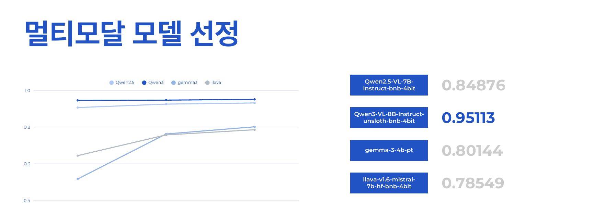
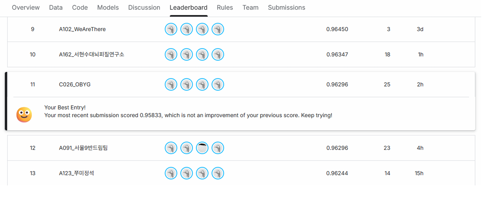

Project 01
이미지 기반 VQA 멀티모달 AI 모델
편향된 이미지 데이터와 제한된 GPU 환경이라는 제약 속에서, VQA 데이터셋을 확장하고 Qwen3-VL-8B 모델을 안정적으로 파인튜닝한 멀티모달 AI 프로젝트입니다.
프로젝트 목표
목표는 단순히 VQA 모델을 학습시키는 것이 아니라, 편향된 이미지 데이터셋을 분석하고 확장하여 8B급 멀티모달 모델의 일반화 성능을 높이는 것이었습니다. 동시에 Colab 및 GPU 자원 제약 환경에서도 반복 실험이 가능하도록 4-bit 양자화와 LoRA 기반 파인튜닝 파이프라인을 구축하는 것이 중요했습니다.
목표 요약: 데이터 편향 분석 → 이미지/QA 데이터 증강 → Qwen3-VL-8B 경량 파인튜닝 → 리더보드 성능 개선.
프로젝트 배경
초기 학습 데이터는 총 3,887장 규모였고, EDA 결과 동물과 음식 이미지가 전체의 40.65%를 차지하는 등 특정 카테고리에 데이터가 집중되어 있었습니다. 이 상태에서 모델을 학습하면 특정 도메인에 과적합될 가능성이 높고, 다양한 이미지 질의응답 상황에 대한 일반화 성능이 떨어질 수 있었습니다.
또한 정답 분포 분석 과정에서 특정 보기, 특히 d 선택지가 많이 추출되는 경향을 확인했습니다. 이로 인해 모델이 보기의 의미보다 선택지 분포에 영향을 받는 softmax bias 가능성을 고려해야 했습니다.
핵심 기능
Pixabay API 기반 이미지 수집 자동화
부족한 카테고리의 이미지를 키워드 기반으로 수집하고, 중복/손상 이미지를 필터링해 학습 데이터 다양성을 보완했습니다.
이미지 전처리 파이프라인
수집 이미지를 max_size=512, quality=85 기준으로 리사이즈하고 압축해 학습에 적합한 형태로 정리했습니다.
AI 기반 Q&A 데이터 생성
이미지 파일명과 태그를 활용해 질문, 선택지(a~d), 정답 쌍을 자동 생성하고 CSV 데이터셋으로 통합했습니다.
균등 샘플링 로더
정답 보기 a~d가 동일한 비율로 추출되도록 샘플링 로더를 구성해 보기 분포 편향을 완화했습니다.
역할 및 기여도
EDA 및 데이터 편향 진단
기여도 20%학습 이미지의 카테고리 분포를 분석해 동물/음식 데이터가 과도하게 많은 구조를 확인했습니다. 단순히 데이터 수만 보는 것이 아니라, 어떤 카테고리에 모델이 과적합될 수 있는지 관점에서 데이터 구성을 점검했습니다.
이미지 수집 및 전처리 자동화
기여도 20%Pixabay API를 활용해 부족한 이미지 카테고리를 키워드 기반으로 자동 수집했습니다. 이후 max_size=512, quality=85 기준으로 리사이즈하고, 중복/손상 이미지를 제거하는 전처리 파이프라인을 구성했습니다.
Q&A 데이터 생성 알고리즘 설계
기여도 20%이미지 파일명과 태그 정보를 기반으로 질문, 보기(a~d), 정답 쌍을 자동 생성했습니다. 생성된 데이터를 CSV 형태로 통합해 파인튜닝에 바로 사용할 수 있는 데이터셋으로 정리했습니다.
학습 튜닝 및 과적합 디버깅
기여도 50%학습 데이터 수를 200, 500, 1000개 단위로 늘리며 Loss와 Accuracy 변화를 비교했습니다. 데이터 수 증가만으로는 성능이 완만하게 개선됐지만, 1000개 데이터에서 epoch을 2로 늘렸을 때 Loss가 급증하고 Accuracy가 크게 하락하는 과적합 신호를 확인했습니다. 이후 Learning rate, Weight decay, LoRA dropout(0.05~0.1)을 조정하며 적정 학습량과 안정적인 수렴 구간을 탐색했습니다.
최종 성능 발표
기여도 100%리더보드 결과, 데이터 증강 전략, 균등 샘플링 로더, 하이퍼파라미터 튜닝 과정을 발표 자료로 정리했습니다. 단순 점수 발표가 아니라 성능 개선에 영향을 준 실험 흐름을 중심으로 설명했습니다.

모델 선정 근거: Qwen2.5-VL, Qwen3-VL-8B, Gemma, LLaVA 계열을 비교했고, 최종적으로 Qwen3-VL-8B-Instruct-unsloth-bnb-4bit 모델이 가장 높은 성능 흐름을 보여 주요 모델로 채택했습니다.
사용 기술 및 선택 이유
Qwen3-VL-8B
이미지와 텍스트를 함께 이해해야 하는 VQA 태스크에 적합한 Vision-Language Model이 필요해 사용했습니다. 최종 리더보드 성능을 낸 주요 모델입니다.
Pixabay API
부족한 이미지 카테고리를 빠르게 보완하기 위해 사용했습니다. 키워드 기반 자동 수집이 가능해 데이터 증강 파이프라인에 적합했습니다.
Unsloth + QLoRA
Colab 및 GPU 자원 제약 환경에서도 8B 모델을 OOM 없이 반복 실험하기 위해 선택했습니다. 4-bit 양자화와 LoRA 파인튜닝을 통해 메모리 부담을 낮췄습니다.
PyTorch
모델 로딩, 데이터셋 구성, 학습 루프, 실험 조건 변경이 유연해 반복적인 모델 튜닝과 평가에 적합했습니다.
주요 문제 해결 사례
문제 1. 학습 데이터가 동물/음식 카테고리에 과도하게 집중됨
상황: 주어진 3,887장 이미지 데이터를 EDA한 결과, 동물과 음식 이미지가 전체의 40.65%를 차지했습니다. 이 상태로 학습하면 특정 카테고리에 과적합되어 다양한 이미지에 대한 VQA 일반화 성능이 떨어질 수 있었습니다.
해결: Pixabay API를 활용해 부족한 카테고리 이미지를 키워드 기반으로 자동 수집했습니다. 수집 후 max_size=512, quality=85 기준으로 리사이즈하고, 중복 이미지와 손상 이미지를 필터링하는 전처리 파이프라인을 구성했습니다.
핵심 판단: 모델 튜닝 이전에 데이터 분포 문제를 먼저 해결해야 일반화 성능을 확보할 수 있다고 판단.
문제 2. 정답 분포 불균형으로 softmax bias 가능성 발생
상황: 정답 분포를 분석한 결과 d 선택지가 상대적으로 많이 추출되는 경향을 확인했습니다. 특정 보기가 자주 정답으로 등장하면 모델이 실제 의미 판단보다 보기 분포에 영향을 받을 가능성이 있었습니다.
해결: 데이터 추출 단계에서 모든 보기(a~d)가 동일한 비율로 추출되도록 균등 샘플링 로더를 구성했습니다. 이를 통해 학습 과정에서 특정 선택지에 대한 편향이 커지지 않도록 제어했습니다.
핵심 판단: 보기 순서를 임의로 섞는 방식이 아니라, 보기별 정답 분포를 맞추는 균등 샘플링 전략을 적용.
문제 3. 데이터 증강 후 학습량 증가에 따른 과적합 신호 발생
상황: 데이터 수를 200개에서 500개, 1000개로 늘렸을 때는 Loss가 낮아지고 Accuracy가 소폭 상승하는 흐름을 확인했습니다. 하지만 1000개 데이터에서 epoch을 2로 늘리자 Loss가 약 0.84 수준까지 급증하고 Accuracy가 약 0.27 수준으로 하락했습니다. 이는 모델이 증강 데이터의 패턴을 과하게 학습했을 가능성을 보여주는 신호였습니다.
해결: 실험 로그에서 Loss와 Accuracy가 함께 무너지는 지점을 기준으로 학습량을 다시 조정했습니다. Learning rate와 Weight decay를 낮춰 업데이트 폭을 안정화하고, LoRA dropout(0.05~0.1)을 적용해 특정 패턴 암기를 줄이는 방향으로 비교했습니다. 단순히 데이터와 epoch을 늘리는 방식이 아니라, 지표 흐름을 역추적해 적정 학습량을 조절했습니다.
학습 데이터 수와 epoch 변화에 따른 지표 흐름
Loss
Accuracy
결론: 데이터 수를 늘리는 것은 일정 구간까지 도움이 됐지만, epoch 증가가 함께 들어가면 과적합이 발생했습니다. 이 실험을 통해 “학습량이 많을수록 좋다”가 아니라 “Loss 흐름을 보며 학습 강도를 조절해야 한다”는 기준을 세웠습니다.
핵심 판단: 성능 개선은 더 많은 학습이 아니라, 과적합 신호를 읽고 학습 강도를 조절하는 과정에서 만들어짐.
문제 4. Colab 및 GPU 자원 제약으로 반복 실험이 어려움
상황: 7B~8B급 모델을 일반적인 방식으로 실험하면 메모리 부족(OOM) 문제가 발생할 수 있어 반복적인 튜닝이 어려웠습니다.
해결: Unsloth 기반 4-bit 양자화와 LoRA/QLoRA 파인튜닝을 적용해 메모리 사용량을 낮췄습니다. 이를 통해 제한된 환경에서도 8B 모델을 안정적으로 반복 실험할 수 있는 파이프라인을 구성했습니다.
핵심 판단: 구체적인 절감률을 과장하지 않고, OOM 없이 반복 실험 가능한 파이프라인 확보에 초점.
성과
핵심 성과: 데이터 편향을 직접 분석하고, 이미지 수집/QA 생성/균등 샘플링/양자화 학습까지 연결해 최종 리더보드 11위 달성.

최종 리더보드 결과: C026_OBYG 팀으로 11위, 팀 최종 베스트 점수 0.96296을 기록했습니다.
회고
이 프로젝트에서 가장 크게 배운 점은 모델 성능이 모델 크기만으로 결정되지 않는다는 점입니다. 실제 성능 개선은 데이터 분포를 확인하고, 편향 가능성을 줄이며, 학습 과정의 Loss 흐름을 해석하는 과정에서 만들어졌습니다.
특히 Pixabay API 기반 이미지 수집과 Q&A 자동 생성 파이프라인을 만들며, 좋은 모델을 쓰기 전에 좋은 학습 데이터를 만드는 과정이 얼마나 중요한지 체감했습니다. 이후 프로젝트에서도 먼저 데이터의 맥락을 확인하고, 모델이 어떤 근거로 판단하는지 추적하는 습관을 갖게 되었습니다.